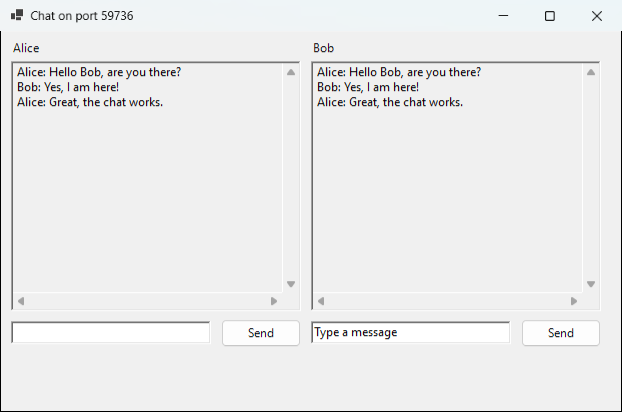

Tutorial 63: A chat over TCP
A server that relays every line to all clients, two chat windows that connect to it, and a timer that polls the sockets so the windows never freeze. A real network program in one file.
What you will learn#
- the structure of a chat: one server, many clients,
- a text protocol with one message per line,
- why a window program must never wait for the network,
- reading the bytes that are available, and building lines from them,
- polling with a timer,
- testing network code with a pump and a short wait.
The idea#
The server listens on a port. Each client connects and sends lines such as Alice: Hello. The server sends every line it receives to all clients, including the sender, so everybody sees the same conversation in the same order. The protocol is the simplest possible: one message per line, the sender's name at the start. Tutorial 25 explains sockets; here they are used in a window program.
The program#
# Tutorial 64: a chat over TCP - a server that relays lines, two clients, and a timer that polls the sockets
load "dotnet.ring"
using {
"System"
"System.IO"
"System.Net"
"System.Net.Sockets"
"System.Threading"
"System.Drawing"
"System.Windows.Forms"
}
oForm = ""
oServer = ""
aClients = [] # the two chat clients
aLogs = [] # the two text boxes that show the conversation
aInputs = [] # the two text boxes where the user types
oTimer = ""
func main
oServer = new ChatServer()
nPort = oServer.start()
oForm = uiForm("Chat on port " + nPort,620,380)
cNames = ["Alice","Bob"]
for nIndex = 1 to 2
nLeft = 10 + (nIndex - 1) * 300
uiLabel(oForm,cNames[nIndex],nLeft,8,280,20)
oLog = uiMemo(oForm,nLeft,30,290,250)
oLog.ReadOnly = True
aLogs + oLog
oInput = uiTextBox(oForm,nLeft,290,200,24)
aInputs + oInput
uiButton(oForm,"Send",nLeft + 210,288,80,28,"sendFrom(" + nIndex + ")")
aClients + new ChatClient(cNames[nIndex],nPort)
next
# the timer asks the server and the clients if something has arrived (Ring has one thread: nothing waits)
oTimer = uiTimer(100,"pump()")
oTimer.Start()
uiTest(oForm,"selfTest()")
uiRun(oForm)
uiEnd()
oTimer.Stop()
for oClient in aClients
oClient.close()
next
oServer.stop()
# the user pressed Send in window nIndex: send the text to the server
func sendFrom nIndex
cText = trim(aInputs[nIndex].Text)
if cText != ""
aClients[nIndex].send(cText)
aInputs[nIndex].Text = ""
ok
# one round: the server relays what it has received, and each client shows what it has received
func pump
oServer.poll()
for nIndex = 1 to 2
aNew = aClients[nIndex].poll()
for cLine in aNew
aLogs[nIndex].AppendText(cLine + windowsnl())
next
next
# wait (at most about a second) until the logs have changed: network messages arrive a little later
func waitForText cText
for nTry = 1 to 50
pump()
if substr(aLogs[1].Text,cText) > 0 and substr(aLogs[2].Text,cText) > 0
return True
ok
new Thread().Sleep(20)
next
return False
func selfTest
oTimer.Stop()
aInputs[1].Text = "Hello Bob"
sendFrom(1)
dnAssert("Bob received Alice's line",waitForText("Alice: Hello Bob"),True)
dnAssert("Alice sees her own line too",substr(aLogs[1].Text,"Alice: Hello Bob") > 0,True)
aInputs[2].Text = "Hi Alice"
sendFrom(2)
dnAssert("both windows show Bob's line",waitForText("Bob: Hi Alice"),True)
dnAssert("the server has two clients",oServer.count(),2)
aInputs[1].Text = " "
sendFrom(1)
dnAssert("an empty line is not sent",len(aClients[1].sent()),1)
# ---------------------------------------------------------------- reading lines without waiting
# A StreamReader waits (blocks) when no data has arrived, and the window would freeze. This reader asks first: it takes only the bytes
# that are already there (DataAvailable), builds lines from them, and keeps an unfinished line for the next call.
class LineReader
oStream = ""
cPartial = ""
func init oNetworkStream
oStream = oNetworkStream
return self
func lines
aList = []
while oStream.DataAvailable
nByte = oStream.ReadByte()
if nByte = 10 # the end of a line
aList + cPartial
cPartial = ""
but nByte != 13
cPartial += char(nByte) # a Ring text is a list of bytes: UTF-8 text stays correct
ok
end
return aList
# ---------------------------------------------------------------- the server
# The server accepts connections and sends every line it receives to ALL clients (the sender included).
class ChatServer
oListener = ""
aConnections = [] # [TcpClient, LineReader, StreamWriter]
func init
return self
func start
oListener = new TcpListener(new IPAddress().Loopback,0)
oListener.Start(NULL)
return oListener.LocalEndpoint.Port
func count
return len(aConnections)
# called often: accept new clients, read the lines that are waiting, relay them
func poll
while oListener.Pending()
oSocket = oListener.AcceptTcpClient()
oStream = oSocket.GetStream()
oWriter = new StreamWriter(oStream)
oWriter.AutoFlush = True
oReader = new LineReader(oStream)
aConnections + [oSocket,oReader,oWriter]
end
aReceived = []
for aConnection in aConnections
oReader = aConnection[2]
aNew = oReader.lines() # (a variable first: "for x in call()" would call it again and again)
for cLine in aNew
aReceived + cLine
next
next
for cLine in aReceived
for aConnection in aConnections
aConnection[3].WriteLine(cLine)
next
next
func stop
for aConnection in aConnections
aConnection[3].Dispose()
next
aConnections = []
oListener.Stop()
# ---------------------------------------------------------------- a client
class ChatClient
cName = ""
oSocket = ""
oReader = ""
oWriter = ""
aSent = []
func init cWho, nPort
cName = cWho
oSocket = new TcpClient()
oSocket.Connect("127.0.0.1",nPort)
oStream = oSocket.GetStream()
oReader = new LineReader(oStream)
oWriter = new StreamWriter(oStream)
oWriter.AutoFlush = True
return self
# the line that is sent to the server starts with the name: "Alice: Hello"
func send cText
oWriter.WriteLine(cName + ": " + cText)
aSent + cText
func sent
return aSent
# the lines that have arrived since the last call
func poll
return oReader.lines()
func close
oWriter.Dispose()
oSocket.Close()
SELFTEST OK (5 checks)How it works#
Never wait in a window program#
StreamReader.ReadLine() waits until a whole line arrives. In a window program that means the window freezes: it cannot repaint or answer clicks. Ring has one thread, so waiting is not allowed. The solution has two parts:
- Ask first.
NetworkStream.DataAvailablesays whether bytes are waiting.LineReader.lines()reads only the bytes that are there (ReadByte), adds them to a buffer, and returns a line each time it sees a line feed (byte 10). An unfinished line stays incPartialuntil the next call. - Ask often. A
uiTimercallspump()every 100 milliseconds: the server accepts new connections (Pending()), reads and relays the lines, and each client shows what it received.
A Ring text is a list of bytes, so cPartial += char(nByte) rebuilds UTF-8 text correctly, also for non-English letters.
The classes#
- **
LineReader** turns a stream into lines without waiting. - **
ChatServer** keeps a list of connections[socket, reader, writer];poll()accepts, reads, and writes each received line to every connection. - **
ChatClient** connects, sends"Name: text"and returns the lines that arrived.
The two windows live in the same program only to make the tutorial easy to run; the classes would work the same in different programs on different computers. Give the server's address instead of 127.0.0.1.
Two Ring details that cost time while writing this lesson: for x in object.method() calls the method again for every item, so a method that consumes data must be assigned to a variable first; and a variable named oR is read as the keyword or.
Testing#
The self test sends a line from Alice and calls waitForText, which pumps up to 50 times with a 20 ms sleep until both windows show the line — network messages arrive a little later, so a test must wait for them instead of checking at once. Then it checks that Bob's line arrives in both windows, that the server has two clients, and that an empty text is not sent.
What you learned#
- server and clients with
TcpListenerandTcpClient, - a line-based protocol,
- polling with a timer instead of waiting,
DataAvailableandReadByte,- testing asynchronous code with a bounded wait.
Exercises#
- Show a list of the connected names and tell everybody when somebody joins.
- Add a third window.
- Send a private message with
/to Bob text: the server must send it only to Bob. - Close a client and make the server remove the dead connection from its list.